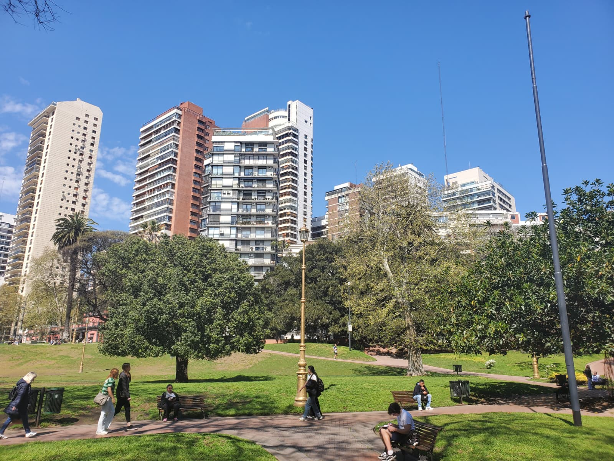

Belgrano Histórico y Cultural: Cinco Contrastes a Pie
Descubrí Belgrano a tu propio ritmo. Un trayecto peatonal que enlaza los grandes desniveles verdes de Barrancas con la elegancia residencial neoclásica del Museo Larreta y la vibrante modernidad multicultural del Barrio Chino.
- Duración total~ 2.5 horas
- Distancia2.8 km
- DificultadBaja (peatonal)
- AccesibilidadParcial (rampas)

Recorrido Belgrano
Descubre el encanto de cada parada
Un viaje por la historia, la cultura y la arquitectura que define a este emblemático barrio porteño.
-
Barrancas de Belgrano
Un mirador natural con vistas impresionantes del Río de la Plata. Ideal para disfrutar del atardecer.
Conocer más sobre Barrancas de Belgrano -
Estadio River Plate - Estadio Monumental
El estadio más grande de Argentina y sede de la final del Mundial 78. Visitá el Museo River y conocé tribunas y vestuarios con la visita guiada.
Conocer más sobre el Estadio Monumental -
Museo Histórico Sarmiento
El antiguo edificio municipal de Belgrano, donde sesionó el Congreso Nacional en 1880. Hoy conserva los objetos personales y el legado de Sarmiento.
Conocer más sobre el Museo Histórico Sarmiento -
Museo de Arte Español Enrique Larreta
La antigua casa del escritor Enrique Larreta, convertida en un museo que alberga arte español.
Conocer más sobre el Museo Larreta -
Barrio Chino y Arco de Belgrano
Un paseo gastronómico y cultural que combina la tradición china con la identidad porteña.
Conocer más sobre el Barrio Chino